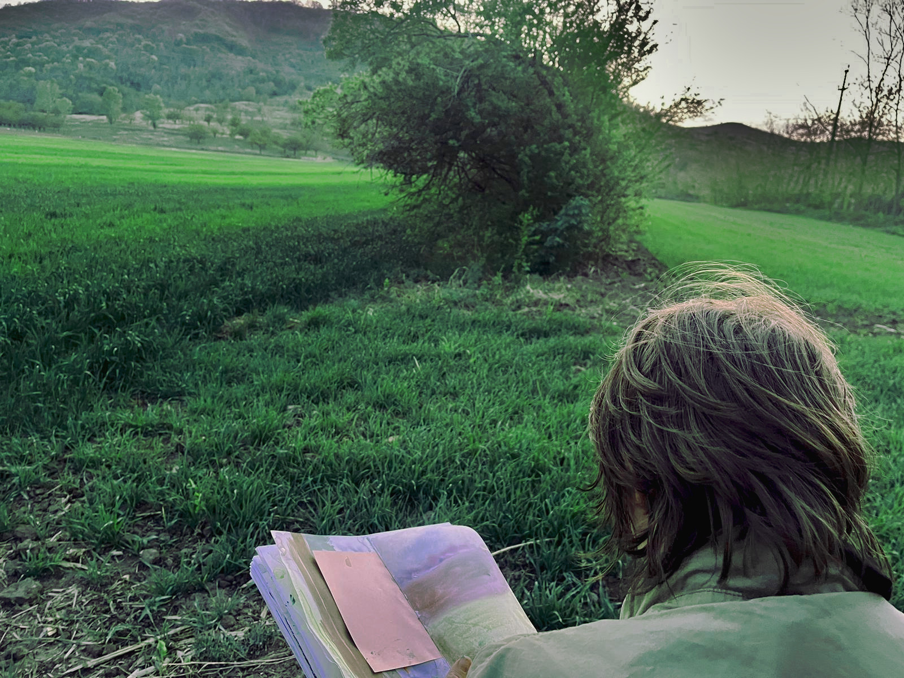

Über mich
Ich male in einem intuitiven Prozess. Mal ist es das reine Material, der Zufall, der den Anfang macht, mal sind es Beobachtungen, die ich interpretiere.
Oft erlebt ein Bild mehrere grundlegende Veränderungen, bevor es bei seiner endgültigen Form ankommt. Ich verirre mich gerne, nur um einen unerwarteten Weg aus dem Wald zu finden.
Geboren und aufgewachsen im Stuttgarter Raum, bin ich zum Studium der Ethnologie nach Heidelberg und Freiburg. Außerdem habe ich Zeit in Indonesien und Rumänien verbracht.
